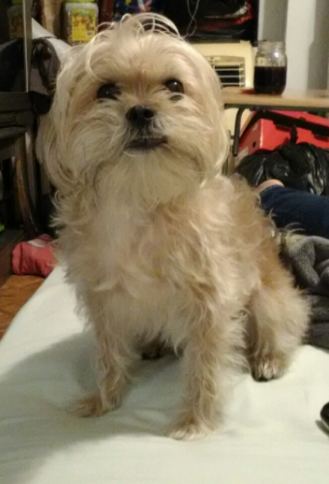
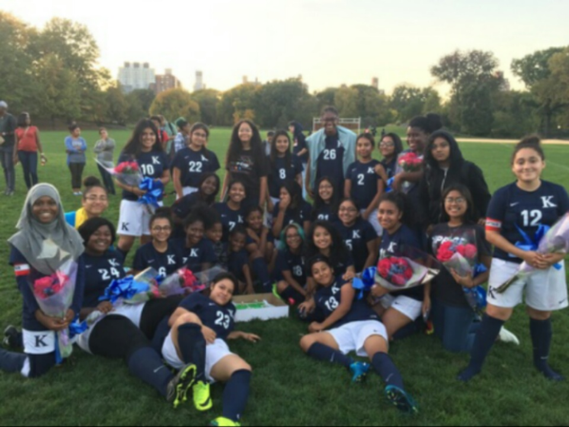
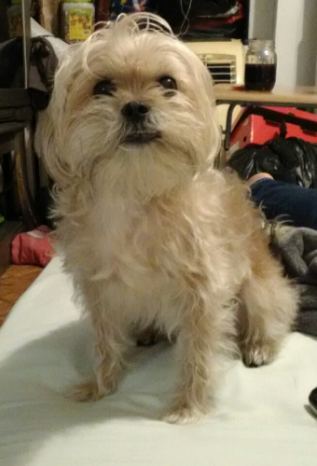
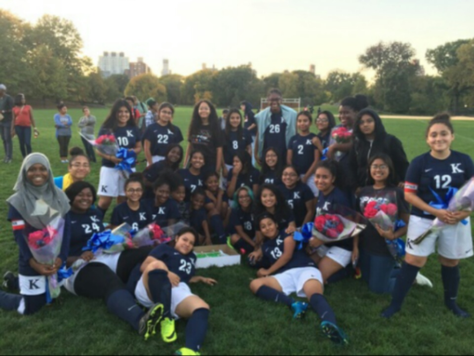

Hello! My name is Maria and here are a few facts about me.
I have an older sister and two younger brothers. As well I have a dog named Melissa who is 6 years old. I have a strong love for animals since I was little and hope to become a vet when I grow up.I attend the school KIPP NYC College Prep .I enjoy being creative and tend to buy books that require me to challenge my creativity in different ways.I specifically like Keri Smith books. I am Mexican, which is also where my love for playing soccer came from and I love the food of my culture. I especially like to eat tostadas and posole. Lastly, I have played the violin 6 years and I enjoy doing it because it gives me a voice for myself showing my ability.
 


